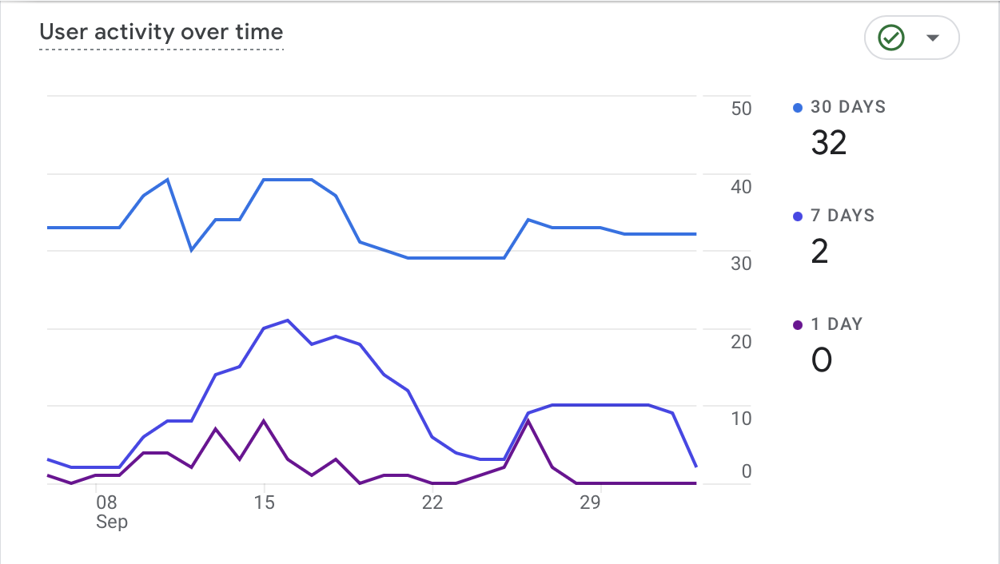
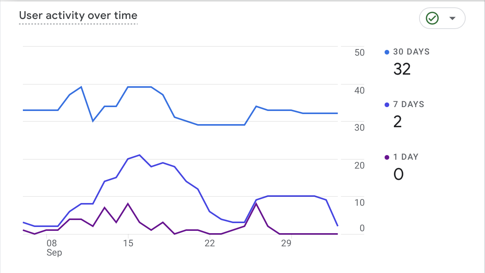

iNethi Network Insight
Network Status, Hotspot Locations, and Voucher Management
About the iNethi App Visibility
The iNethi Map and Voucher Tracking platform was developed to address the challenge of underutilization of local services within the Ocean View Community Wireless Network (CWN) in Cape Town, South Africa. While the network provides residents with affordable access to essential digital resources such as community radio, educational content, and local business services, these offerings are often overlooked. Many community members continue to rely on expensive mobile data, unaware of the local network’s capabilities and struggling with the complexity of managing internet vouchers, which prevents them from fully benefiting from the local service.
Recognizing these barriers, the iNethi Map and Voucher Tracking platform aims to increase engagement and simplify access to the network by providing a centralized interface that integrates real-time network status, hotspot locations, and easy voucher management. The platform’s interactive map enables users to quickly identify available Wi-Fi hotspots, view the status of each node, and make informed decisions about their connectivity. Additionally, by offering clear visibility into voucher balances and usage, the system reduces confusion around data management and encourages more frequent use of iNethi’s local services.
Through this solution, the iNethi Map and Voucher Tracking platform not only enhances service visibility and usability but also empowers the community to take full advantage of the affordable and valuable resources available within the network. By bridging the gap between network awareness and access, the platform seeks to transform how residents utilize the local infrastructure, promoting a stronger and more connected digital community in Ocean View.
Context
The Ocean View Community Wireless Network (CWN) was established to bridge the digital divide by providing affordable internet access and localized digital services to residents of the Ocean View community in Cape Town, South Africa. This community-driven initiative offers a unique solution to the high cost of mobile data by enabling residents to access essential content through local Wi-Fi hotspots at a fraction of the cost. However, despite these efforts, the network remains underutilized, with many residents unaware of the available services or unable to access them efficiently.
Previous studies and community workshops identified several key challenges contributing to this underutilization: a lack of visibility into hotspot locations, limited information on service availability, and complex voucher management. Many users expressed frustration with the difficulty of finding active network nodes and managing their internet vouchers, which discouraged engagement with the network’s offerings. As a result, the Ocean View CWN is not reaching its full potential, with residents still depending on expensive mobile data to access information and services.
To address these gaps, the iNethi Map and Voucher Tracking platform was developed as part of a broader strategy to improve service awareness, simplify connectivity, and enhance the user experience. By providing real-time insights into network status, making hotspot locations visible through an interactive map, and streamlining voucher management, the platform aims to empower residents to make full use of the affordable resources available within the community network. This solution is expected to not only increase local service usage but also foster a greater sense of digital inclusion and participation within Ocean View.
Design Process and Methodology
Community-Centric Design Approach
The iNethi Map and Voucher Tracking platform was developed using a Participatory Design methodology that prioritized user engagement and community input. This ensured that the platform addressed the real-world challenges faced by residents in the Ocean View community. Through a series of structured workshops, focus group discussions, and iterative testing, the platform evolved to meet both technical requirements and community needs. This collaborative process fostered a strong sense of ownership among participants, enhancing the relevance and usability of the solution.
Project Management
The study initially adopted an Agile project management framework using Scrum, but due to the need to align workshops with the community’s schedule and delays in ethics clearance, Action Research proved more effective. This approach offered the necessary flexibility and adaptability, aligning well with projects needing ongoing community engagement.
Workshops in Ocean View
| Date | Workshop | Activities | Outcomes |
|---|---|---|---|
| 09/08/2024 | Workshop One | Introduced the initial prototype of the iNethi app. Engaged participants in the co-design process by gathering feedback on features, usability, and the overall interface. Discussed issues related to digital connectivity in the community. | Participants were able to identify their primary needs and suggested features for the app. They highlighted confusion around data usage and connection status. Feedback was gathered to refine the map feature and improve data usage tracking. |
| 13/08/2024 | Workshop Two | Tested the updated version of the app. Participants interacted with the app, focusing on navigating the map, understanding node status, and monitoring data usage. Conducted cognitive walkthroughs to capture user thought processes and challenges. | Users found the updated features easier to navigate but suggested clearer labels for data usage and connection status. Feedback indicated a need for visual aids like progress bars and status icons to enhance clarity and usability. |
| 20/08/2024 | Workshop Three | Tested the final version of the iNethi app in a real-world setting. Participants assessed the clarity of the network status indicators, data tracking, and overall usability of the app in a simulated environment. | Participants provided positive feedback on the usability improvements, particularly the connection status indicators and map feature. However, challenges with installation due to device compatibility were noted. |
Co Design artifacts
Participants’ designs of the app store interface


 ß
ß
Results
The iNethi app demonstrated significant improvement in user engagement and usability during structured co-design workshops. Participants responded positively to the new map feature, which allowed them to visualize network nodes and track their connection status. The introduction of clearer data usage tracking, such as progress bars and redesigned labels, addressed previous confusion and enhanced user satisfaction. Despite the success in workshop settings, long-term engagement remained a challenge due to limited offline functionality and the need for further refinement in communicating connectivity status.


Data Insights
The data collected during the workshops revealed several key patterns in user interaction and behavior. The most frequently accessed feature was the map tool, with participants actively using it to locate network nodes and monitor their connection status. The tracked data also showed that users spent more time on features with visual feedback, such as the data usage progress bar and real-time node status indicators. However, the data highlighted a common issue where users were uncertain about their overall network connectivity, spending extended time on screens with ambiguous status messages. This indicated a need for clearer communication of network conditions and simplified navigation between features. The insights gained from these observations guided further refinements to improve usability and address confusion around connection status and data usage tracking.
 


Acknowledgement
We would like to express our gratitude to the Ocean View community for their enthusiastic participation and invaluable contributions throughout the development of the iNethi App Store. Special thanks go to Black Equations and its team, led by Ganief Manuel, for their support in managing the community network and facilitating workshops. This project would not have been possible without the guidance and mentorship of our supervisor, Melissa Desmore, whose insights greatly shaped the research and development process. We also acknowledge the University of Cape Town for providing resources required to conduct this study, and extend our thanks to the iNethi organization for creating the foundational infrastructure that made this project a reality.